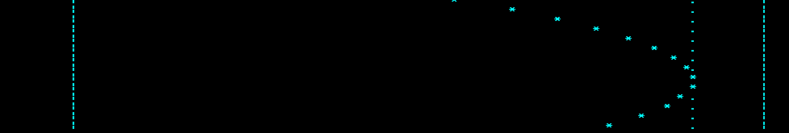

Why do this?
Why render the output from a physics engine to a string of characters and then print that string to the command line (see animated gif above)? And why are there two versions of this code?
The One-Pager
At the center of this rendering approach is the function, render_airtrack, that constructs the 125 character string (see embedded code below or view the full page in a new tab). This function uses a for loop which repeatedly adds to the string, one character at a time. Inside this loop, the if statement compares the j loop index against the integer positions provided in the three inputs. The position of the left and right edges of the track are marked with the '|' character. The position of the car (on the track) is marked using the '*' character. Everything else (the empty space on the track that isn't occupied by the car) is represented with the ' ' character (a blank).
import time
def render_airtrack(x_px, x_left_edge_px, x_right_edge_px):
string = ''
display_width_px = 125
for j in range(0, display_width_px + 1):
if (j == x_px):
string += '*'
elif (j==x_left_edge_px) or (j==x_right_edge_px):
string += '|'
else:
string += ' '
return string
The output of the physics engine, the position of the car, must be converted to the discrete representation of the world offered by renderer (in our case, a 125 character string). This conversion from the world to the screen can be as simple as applying a scaling factor (like the 7 used in m_to_px) and then converting to an integer (using Python's int function). This conversion is an opportunity to zoom-in or zoom-out before the rendering (as illustrated in example 6 in the video).
def m_to_px(x_m):
return int(round( x_m * 7.0)) # pixels per meter.
The render_airtrack function is called inside the animation loop of the main script function (see code below). Here, in main, the speed and position of the car is calculated (the physics engine) and supplied to the rendering function. The motion calculations are in the highlighted lines, 41-42 (Euler's Method).
In lines 45-47, the position of the car is checked against the wall positions (or ends of the track). If the car has penetrated the wall, the direction of the motion is reversed (a bounce) and the penetration of the wall is resolved (stickiness correction).
Lines 39 and 53 put the primary block of code into a basic error-catching structure. This allows the user to cleanly stop the script by issuing a Ctrl-c from the keyboard. A more useful error-catching structure is shown below in the longer version of the code.
def main():
x_left_edge_m = 1.5
x_right_edge_m = 17.5
dt_s = 0.015
x_m = 11.0
v_mps = 17.0
a_mps2 = -2.0
for j in range(5000):
try:
# Update the velocity and position.
v_mps += a_mps2 * dt_s
x_m += v_mps * dt_s
# Check for wall collisions.
if (x_m < x_left_edge_m) or (x_m > x_right_edge_m):
v_mps *= -1 * 0.80 # loss of 20% on each bounce.
x_m = x_fix_sticky( x_m, x_left_edge_m, x_right_edge_m)
display_string = render_airtrack( m_to_px( x_m), m_to_px( x_left_edge_m), m_to_px( x_right_edge_m))
print display_string + ' x =' + "%.3f" % x_m + " " + ' v = ' + "%.1f" % v_mps
time.sleep(dt_s)
except:
break
main()
The function x_fix_sticky is used to resolve the penetration. The video for the long-version of this code shows a case where the car sticks to the wall. This can happen when gravity and non-elastic collisions cause the penetrating motion to be more than the recovering (rebounding) motion. The result can be that the car remains stuck on the other side of the wall. The simple method used here brings the car back to the wall surface in the frame that the penetration is observed.
def x_fix_sticky( x_m, x_left_edge_m, x_right_edge_m):
# Simple stickiness correction. Move it back to the surface.
if (x_m < x_left_edge_m):
x_corrected_m = x_left_edge_m
elif (x_m > x_right_edge_m):
x_corrected_m = x_right_edge_m
return x_corrected_m
Note that there is no global scope in the one-pager version of the code.
All variables are passed in as immutable objects. These are not changed
inside the functions! Local results are returned at the end of each
function. A different technique for modifying variables is used in the
longer version of the code.
The Longer Version
Conceptually this longer version (#2) of the code is very similar to the one-pager described above: calculated motion, collision detection and resolution, and rendering to a string. Features have been added to facilitate the making of the video and also serve as a stepping stone to the class structures used in the next section. The following animated gif is a screen capture from example #10. To see example #10 running in the command window, run the file from the command line with a 10 after the filename. To see the numeric-output details from the engine, run with 10 d after the filename.

At the end of this page is a scrollable window for the code (alternately, here's a full-page view in a new tab). The comments below, intended to draw focus to the added features of this longer version, make reference to the line numbers in the code. The scrollable window has the first line, of a referenced range of lines, marked by a lighter background.
import time, sys, textwrap
from timeit import default_timer
def px_from_m( x_m):
return int(round( x_m * env['m_to_px']))
def move( car):
v_i = car['v_mps']
car['v_mps'] += car['a_mps2'] * dt_s
if env['exact_solution']:
'''
Note that the following formulation is equivalent to the one being used below.
car['x_m'] += ((v_i + car['v_mps'])/2.0) * dt_s
'''
car['x_m'] += v_i * dt_s + (car['a_mps2'] * (dt_s ** 2.0))/2.0
else:
'''
Normal Euler's method (using v at the beginning of the frame).
car['x_m'] += v_i * dt_s
'''
# Backward Euler's method (using v at the end of the frame).
car['x_m'] += car['v_mps'] * dt_s
def debug_print(name_string):
'''
Print out the values for a set of global names contained in a string
and separated by commas. This isn't actually used, but cute enough to keep.
'''
names = name_string.split(",")
print_string = ''
for name in names:
print_string += name + ":" + str(eval(name)) + ", "
print print_string
def dp(variable, variable_name):
# dp is short for debug print.
print variable_name + "=" + str(variable)
def x_corrected_exact( car, x_overlap):
# Inputs are conditions at the time of collision detection. These
# values have signs. For example x_overlap is positive for penetration
# on the right end of the track.
if env['stickiness_correction']:
x_coll_m = car['x_m']
v_coll_mps = car['v_mps']
'''
Determine the car state as it passes through the wall.
Solve the following equation for v_wall.
v_coll_mps**2 = v_wall_mps**2 + 2*a*x_overlap
'''
v_wall_mps = (v_coll_mps**2.0 - 2.0 * car['a_mps2'] * x_overlap)**0.5
if track['collision_state'] == 'left':
v_wall_mps = -1.0 * abs(v_wall_mps)
'''
The time expended penetrating the wall.
Solve the following equation for t_pen.
x_coll_m = x_wall_m + ((v_wall_mps + v_coll_mps)/2.0) * t_pen
'''
t_pen = 2.0 * x_overlap/(v_wall_mps + v_coll_mps)
# The distance covered bouncing back from the wall in time t_pen. Change
# the sign (direction) of v_wall.
v_wall_afterbounce_mps = v_wall_mps * -1.0 * env['CR']
x_bounce_pen = v_wall_afterbounce_mps * t_pen + (car['a_mps2'] * t_pen**2.0)/2.0
if track['collision_state'] == 'left':
if x_bounce_pen < 0.0: x_bounce_pen = 0.0
else:
if x_bounce_pen > 0.0: x_bounce_pen = 0.0
# The corrected position, that is, where it would be if it had bounced off the wall.
car['x_m'] = (x_coll_m - x_overlap) + x_bounce_pen
# Also need to determine the velocity at the corrected position.
car['v_mps'] = v_wall_afterbounce_mps + t_pen * car['a_mps2']
# Change this to True to print these variables for debugging.
if False:
dp(x_coll_m, "x_coll_m")
dp(v_coll_mps, "v_coll_mps")
dp(t_pen, "t_pen")
dp(v_wall_mps, "v_wall_mps")
dp(v_wall_afterbounce_mps, "v_wall_afterbounce_mps")
dp(x_bounce_pen, "x_bounce_pen")
dp(car['x_m'], "car['x_m']")
dp(car['v_mps'], "car['v_mps']")
else:
# If no position correction, simply reverse the direction of the car.
car['v_mps'] *= -1.0 * env['CR']
def check_for_wall_collisions( car):
# Check for a collision.
if (car['x_m'] < track['left_edge_m']):
x_overlap = car['x_m'] - track['left_edge_m']
track['collision_state'] = 'left'
elif (car['x_m'] > track['right_edge_m']):
x_overlap = car['x_m'] - track['right_edge_m']
track['collision_state'] = 'right'
else:
track['collision_state'] = 'none'
# Resolve the collision.
if track['collision_state'] != 'none':
track['collision_mark_px'] = px_from_m( car['x_m'])
if env['exact_solution']:
x_corrected_exact( car, x_overlap)
else:
if env['stickiness_correction']:
if env['correction_version_2']:
# Move the car back to the surface and then an additional
# equal amount but reduced by the CR coefficient.
car['x_m'] -= x_overlap * (1 + env['CR'])
else:
# Simple stickiness correction. Move it back by the amount of the overlap.
# This puts the car at the surface.
if track['collision_state'] == 'left':
car['x_m'] = track['left_edge_m']
else:
car['x_m'] = track['right_edge_m']
# Loss of (1-CR)*100% on each bounce.
car['v_mps'] *= -1 * env['CR']
else:
track['collision_mark_px'] = -999
def build_airtrack_string( car):
left_edge_px = px_from_m( track['left_edge_m'])
right_edge_px = px_from_m( track['right_edge_m'])
display_width_px = 135
car_location_px = px_from_m( car['x_m'])
string = ''
for j in range(0, display_width_px + 1):
if (j == car_location_px):
string += '*'
elif ((j == left_edge_px) or (j == right_edge_px)):
string += '|'
elif (track['show_start_mark'] and (j == track['track_mark_px'])):
string += "."
elif (track['show_collision_mark'] and (j == track['collision_mark_px'])):
string += "0"
else:
string += ' '
return string
def render( car):
display_string = build_airtrack_string( car)
if cl['details']:
print display_string + 'x=' + "%6.3f" % car['x_m'] + ', v=' + "% .2f" % car['v_mps'] + ", F=" + "%3.0f" % fps_observed
else:
print display_string
def pos_avg_10( car):
x_list.append( car['x_m'])
if len(x_list) > 10: x_list.pop(0)
return sum(x_list)/float(len(x_list))
def pretty_paragraphs( text_string, n_blanklines):
paragraph_list = text_string.split('||')
for paragraph in paragraph_list:
dedented_text = textwrap.dedent( paragraph).strip()
print textwrap.fill(dedented_text, initial_indent=' ', subsequent_indent=' ')
print ""
for j in range( n_blanklines): print "\n"
def print_delay( string):
print string
time.sleep( 0.10)
def try_sleep( seconds):
# If you don't want to wait. Press control-c to break out of the sleep.
try:
time.sleep( seconds)
except KeyboardInterrupt:
print_delay(" * ")
print_delay(" * * ")
print_delay(" * * ")
print_delay(" * * ")
print_delay(" * ")
print "\n\n\n"
def print_header(car):
print "\n\n\n\n"
print " Example #" + str(cl['example_index'])
print " ---------------------"
print " Initial x = " + str(car['x_m'])
print " Initial v = " + str(car['v_mps'])
print " a = " + str(car['a_mps2'])
print " Coefficient of Restitution = " + str(env['CR'])
print ""
print " Stickiness correction = " + str(env['stickiness_correction'])
if env['stickiness_correction'] and not env['exact_solution']:
print " Correction (version 2) = " + str(env['correction_version_2'])
print " Exact solution = " + str(env['exact_solution'])
print " Use observed dt in next frame = " + str(env['use_observed_dt'])
print ""
print " Show starting mark (\".\") = " + str(track['show_start_mark'])
print " Show collision mark (\"0\") = " + str(track['show_collision_mark'])
print " Show physics-engine output = " + str(cl['details'])
print ""
print " FPS target = " + str(env['fps_target'])
print " Auto-Off = " + str(env['auto_off'])
print " Zoom (meters to px factor) = " + str(env['m_to_px'])
print " "
def modify( car, env):
if cl['example_index'] == 1:
car['x_m'] = 2.0; car['v_mps'] = 0.0; car['a_mps2'] = -1.5
track['show_collision_mark'] = False
env['CR'] = 0.7
print_header(car)
explaination = '''
This first example has the car (represented by a "*") starting from
rest and accelerating to the left. Stickiness correction is ON. There is
energy loss (fractional reduction in v) after each wall collision.
||
Control-s pauses (and restarts) the run. Control-s can be used to give
additional time (pause) for reading the descriptions at the beginning.
Control-c stops the run. Control-c can also be used to skip the
reading-wait at the beginning.
||
First, remember that this is 1-D motion! The history of this
motion moves vertically, one step at a time, as the program renders each
new single-line snapshot. An effective way to view this 1-D motion
(animation) is to focus your attention at the bottom row. The YouTube
video provides a visual aid (an annotation rectangle) to
help you do this. Another approach is to place a sheet of paper over
everything on the screen except the bottom row.
||
If the "d" option is given at the command line, the details of the
physics calculation are printed with each frame. This outputs position,
velocity, and frame rate.
'''
pretty_paragraphs( explaination, 1)
try_sleep(5.0)
elif cl['example_index'] == 2:
car['x_m'] = 1.65; car['v_mps'] = 2.7; car['a_mps2'] = 0.0
env['stickiness_correction'] = False
track['show_collision_mark'] = False
env['CR'] = 1.0
print_header(car)
explaination = '''
Stickiness correction is turned off which allows the overlap
(penetration) to be seen. These are elastic collisions (CR=1), meaning
this will run until a keyboard stop or the loop counter hits its limit.
||
Control-s pauses the run. Control-c stops the run.
'''
pretty_paragraphs( explaination, 1)
try_sleep(3.0)
elif cl['example_index'] == 3:
car['x_m'] = 2.0; car['v_mps'] = 0.0; car['a_mps2'] = -1.5
env['stickiness_correction'] = False
track['show_collision_mark'] = False
env['auto_off'] = False
env['fps_target'] = 30
env['CR'] = 0.6
print_header(car)
explaination = '''
All parameters are identical to example 1 except that stickiness
correction is OFF.
||
Watch the wall collision. With stickiness correction turned off, the
car will be allowed to render in the state of collision (on the other
side of the wall). But with the first bounce, due to gravity and the
collision-related energy losses, the car does not recover from the state
of penetration (the car sticks inside the wall), that is, the ball does not
bounce back far enough to get back to the other side. This leads to a
state of perpetual collisions, with gravity dragging the car to the
left.
||
Control-s pauses the run. Control-c stops the run.
'''
pretty_paragraphs( explaination, 1)
try_sleep(4.0)
elif cl['example_index'] == 4:
car['x_m'] = 0.2; car['v_mps'] = 10.0; car['a_mps2'] = -10.0
env['CR'] = 0.8
env['fps_target'] = 300
track['show_collision_mark'] = False
print_header(car)
explaination = '''
The target frame rate is set high to give an interesting display of the
time-series tail. The car loses speed from each wall collision.
Acceleration (set high) to the left (negative).
||
Control-s pauses the run. Control-c stops the run.
'''
pretty_paragraphs( explaination, 1)
try_sleep(3.0)
elif cl['example_index'] == 5:
car['x_m'] = 2.0; car['v_mps'] = 3.0; car['a_mps2'] = 2.0
env['CR'] = 0.7
print_header(car)
explaination = '''
Acceleration is to the right (opposite direction from other examples).
||
A collision mark (0) is displayed at the original collision
position (before stickiness correction).
||
Control-s pauses the run. Control-c stops the run.
'''
pretty_paragraphs( explaination, 1)
try_sleep(3.0)
elif cl['example_index'] == 6:
car['x_m'] = 2.0; car['v_mps'] = 3.0; car['a_mps2'] = 2.0
env['CR'] = 0.7
env['m_to_px'] = 30.0
print_header(car)
explaination = '''
The scaling factor between the physics engine and the renderer has
decreased from the level used in example 5. This effectively zooms out
the view of the track and the car on it. The output from the physics
engine is unchanged by this; all characteristics of the movement are
identical to those in example 5.
||
Control-s pauses the run. Control-c stops the run.
'''
pretty_paragraphs( explaination, 1)
try_sleep(3.0)
elif cl['example_index'] == 7:
car['x_m'] = 2.0; car['v_mps'] = 0.0; car['a_mps2'] = -2.0
env['CR'] = 1.0
env['fps_target'] = 240
track['show_start_mark'] = True
print_header(car)
explaination = '''
The CR value of unity yields elastic collisions. The frame rate is set
high to give the highest precision in the physics predictions. Note
the car consistently returns to the initial starting point as marked by
the period symbol on the track.
||
Control-s pauses the run. Control-c stops the run.
'''
pretty_paragraphs( explaination, 1)
try_sleep(3.0)
elif cl['example_index'] == 8:
car['x_m'] = 2.0; car['v_mps'] = 0.0; car['a_mps2'] = -2.0
env['CR'] = 1.0
env['fps_target'] = 10
track['show_start_mark'] = True
print_header(car)
explaination = '''
This is like the previous example (7), except the target frame rate is
reduced to give the lower precision in the physics predictions.
Note the car does NOT return to the initial starting point (as marked
on the track by column of period symbols).
||
The "0"s are easy to see in this example. As mentioned before, these
are marks to indicate the position of the car at the time of collision
detection (before stickiness correction is applied to resolve the state
of overlap).
||
Control-s pauses the run. Control-c stops the run.
'''
pretty_paragraphs( explaination, 1)
try_sleep(3.0)
elif cl['example_index'] == 9:
car['x_m'] = 2.0; car['v_mps'] = 0.0; car['a_mps2'] = -2.0
env['CR'] = 1.0
env['fps_target'] = 10
env['use_observed_dt'] = True
track['show_start_mark'] = True
print_header(car)
explaination = '''
The observed dt is used in the subsequent frame to calculate the
physics engine motions. All other settings are identical to those in
example 8. Note the car, again, does NOT return to the initial starting
point (as marked on the track by column of period symbols). But here the
return behavior is more variable.
||
Control-s pauses the run. Control-c stops the run.
'''
pretty_paragraphs( explaination, 1)
try_sleep(3.0)
elif cl['example_index'] == 10:
car['x_m'] = 2.0; car['v_mps'] = 0.0; car['a_mps2'] = -2.0
env['CR'] = 1.0
env['fps_target'] = 10
track['show_start_mark'] = True
env['exact_solution'] = True
print_header(car)
explaination = '''
The Euler-method calculation has been replaced with an exact
calculation method in this example. The calculation uses physics
kinematics equations to model the motion between the ends of the track
and also the motion in the collision frames. The frame rate is set low
to give the most severe test for this exact method. Note the car
consistently returns to the initial starting point.
||
Control-s pauses the run. Control-c stops the run.
'''
pretty_paragraphs( explaination, 1)
try_sleep(3.0)
elif cl['example_index'] == 11:
car['x_m'] = 2.0; car['v_mps'] = 0.0; car['a_mps2'] = -2.0
env['CR'] = 1.0
env['fps_target'] = 10
track['show_start_mark'] = True
env['exact_solution'] = True
env['use_observed_dt'] = True
print_header(car)
explaination = '''
The observed dt is used in the calculations of subsequent frames. Note
that in contrast to example 9, the car consistently returns to the
initial starting point.
||
Control-s pauses the run. Control-c stops the run.
'''
pretty_paragraphs( explaination, 1)
try_sleep(3.0)
elif cl['example_index'] == 12:
car['x_m'] = 2.0; car['v_mps'] = 0.0; car['a_mps2'] = -2.0
env['CR'] = 0.8
env['fps_target'] = 10
track['show_start_mark'] = True
env['exact_solution'] = True
env['use_observed_dt'] = True
print_header(car)
explaination = '''
Same as example 11 but with a CR of less than 1.0.
||
Control-s pauses the run. Control-c stops the run.
'''
pretty_paragraphs( explaination, 1)
try_sleep(3.0)
else:
cl['example_index'] = "--> Defaults"
print_header(car)
explaination = '''
No command line arguments were supplied or there was no
match for the mode value. Default parameters will be used.
||
Control-s pauses the run. Control-c stops the run.
'''
pretty_paragraphs( explaination, 1)
try_sleep(3.0)
def at_rest( car):
avg_car_position = pos_avg_10( car)
rest_tolerance = 0.001
if ( (abs(avg_car_position - track['left_edge_m']) < rest_tolerance) or
(abs(avg_car_position - track['right_edge_m']) < rest_tolerance) ):
return True
else:
return False
def cl_args_init():
cl['n_args'] = len(sys.argv) - 1
if cl['n_args'] >= 1:
cl['example_index'] = int(sys.argv[1])
cl['details'] = False
if cl['n_args'] == 2:
if sys.argv[2] == "d":
cl['details'] = True
def main():
global env, dt_s, track, fps_observed, x_list, cl
# A list to support calculating a running average of the position.
x_list = []
# Initialize the general parameters that control the environment.
env = {'stickiness_correction':True, 'correction_version_2':True ,
'm_to_px':55.0, 'CR':0.80, 'auto_off':True, 'fps_target':30,
'exact_solution':False, 'use_observed_dt':False}
# Characteristics of the air track (the 1-D range of space that the car moves along).
track = {'left_edge_m':0.25 , 'right_edge_m':2.2,
'show_start_mark':False,
'collision_state':'none',
'collision_mark_px':-999, 'show_collision_mark':True}
car = {'x_m':1.1, 'v_mps':0.0, 'a_mps2':0.0}
# Use the command-line arguments if provided. Put them in a dictionary.
cl = {'details':False, 'n_args':0}
cl_args_init()
# Modify the initial conditions for the car and environment if command line parameters
# were provided.
if (cl['n_args'] > 0):
modify( car, env)
fps_observed = env['fps_target']
dt_target_s = 1.0/env['fps_target']
dt_s = dt_target_s
dt_observed_s = dt_target_s
# A mark on the track where the car started at (optionally displayed)
track['track_mark_px'] = px_from_m(car['x_m'])
t_now_s = default_timer()
for j in range( 50000):
try:
t_previous_s = t_now_s
# This check stops the physics calculations if Python is paused by
# by a ctrl-s.
if (dt_observed_s < 0.15):
move( car)
check_for_wall_collisions( car)
render( car)
if env['auto_off']:
if at_rest( car):
break
time.sleep( dt_target_s)
t_now_s = default_timer()
dt_observed_s = t_now_s - t_previous_s
if env['use_observed_dt']:
dt_s = dt_observed_s
fps_observed = 1/dt_observed_s
except KeyboardInterrupt:
print "Stopped by keyboard (Ctrl-c)."
break
except:
print "There is a problem in the TRY block above: \n"
# The following "raise" will print out the traceback.
raise
break
main()